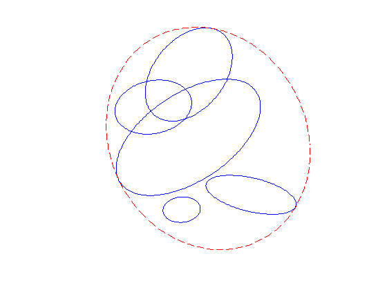

% Section 8.4.1, Boyd & Vandenberghe "Convex Optimization" % Original version by Lieven Vandenberghe % Updated for CVX by Almir Mutapcic - Jan 2006 % (a figure is generated) % % We find a smallest ellipsoid containing m ellipsoids % { x'*A_i*x + 2*b_i'*x + c < 0 }, for i = 1,...,m % % Problem data: % As = {A1, A2, ..., Am}: cell array of m pos. def. matrices % bs = {b1, b2, ..., bm}: cell array of m 2-vectors % cs = {c1, c2, ..., cm}: cell array of m scalars % ellipse data As = {}; bs = {}; cs = {}; As{1} = [ 0.1355 0.1148; 0.1148 0.4398]; As{2} = [ 0.6064 -0.1022; -0.1022 0.7344]; As{3} = [ 0.7127 -0.0559; -0.0559 0.9253]; As{4} = [ 0.2706 -0.1379; -0.1379 0.2515]; As{5} = [ 0.4008 -0.1112; -0.1112 0.2107]; bs{1} = [ -0.2042 0.0264]'; bs{2} = [ 0.8259 -2.1188]'; bs{3} = [ -0.0256 1.0591]'; bs{4} = [ 0.1827 -0.3844]'; bs{5} = [ 0.3823 -0.8253]'; cs{1} = 0.2351; cs{2} = 5.8250; cs{3} = 0.9968; cs{4} = -0.2981; cs{5} = 2.6735; % dimensions n = 2; m = size(bs,2); % m ellipsoids given % construct and solve the problem as posed in the book cvx_begin sdp variable Asqr(n,n) symmetric variable btilde(n) variable t(m) maximize( det_rootn( Asqr ) ) subject to t >= 0; for i = 1:m [ -(Asqr - t(i)*As{i}), -(btilde - t(i)*bs{i}), zeros(n,n); -(btilde - t(i)*bs{i})', -(- 1 - t(i)*cs{i}), -btilde'; zeros(n,n), -btilde, Asqr] >= 0; end cvx_end % convert to ellipsoid parametrization E = { x | || Ax + b || <= 1 } A = sqrtm(Asqr); b = A\btilde; % plot ellipsoids using { x | || A_i x + b_i || <= alpha } parametrization noangles = 200; angles = linspace( 0, 2 * pi, noangles ); clf for i=1:m Ai = sqrtm(As{i}); bi = Ai\bs{i}; alpha = bs{i}'*inv(As{i})*bs{i} - cs{i}; ellipse = Ai \ [ sqrt(alpha)*cos(angles)-bi(1) ; sqrt(alpha)*sin(angles)-bi(2) ]; plot( ellipse(1,:), ellipse(2,:), 'b-' ); hold on end ellipse = A \ [ cos(angles) - b(1) ; sin(angles) - b(2) ]; plot( ellipse(1,:), ellipse(2,:), 'r--' ); axis square axis off hold off
Calling sedumi: 94 variables, 15 equality constraints For improved efficiency, sedumi is solving the dual problem. ------------------------------------------------------------ SeDuMi 1.21 by AdvOL, 2005-2008 and Jos F. Sturm, 1998-2003. Alg = 2: xz-corrector, Adaptive Step-Differentiation, theta = 0.250, beta = 0.500 eqs m = 15, order n = 38, dim = 152, blocks = 8 nnz(A) = 98 + 0, nnz(ADA) = 119, nnz(L) = 67 it : b*y gap delta rate t/tP* t/tD* feas cg cg prec 0 : 6.88E+00 0.000 1 : 2.21E-01 1.98E+00 0.000 0.2884 0.9000 0.9000 1.26 1 1 5.3E+00 2 : 2.53E-01 6.02E-01 0.000 0.3035 0.9000 0.9000 1.69 1 1 1.4E+00 3 : 1.05E-01 1.53E-01 0.000 0.2534 0.9000 0.9000 1.81 1 1 3.7E-01 4 : 7.56E-02 1.52E-02 0.000 0.0993 0.9900 0.9900 1.34 1 1 5.2E-02 5 : 7.86E-02 3.47E-03 0.000 0.2290 0.9000 0.9000 0.90 1 1 1.3E-02 6 : 7.87E-02 1.80E-04 0.000 0.0518 0.9900 0.9900 0.99 1 1 7.1E-04 7 : 7.87E-02 6.81E-06 0.000 0.0379 0.9901 0.9900 1.00 1 1 2.7E-05 8 : 7.87E-02 1.10E-06 0.000 0.1608 0.9030 0.9000 1.00 1 1 4.3E-06 9 : 7.87E-02 6.40E-08 0.340 0.0584 0.9901 0.9900 1.00 1 1 2.6E-07 10 : 7.87E-02 1.71E-08 0.000 0.2674 0.9010 0.9000 1.00 1 2 7.0E-08 11 : 7.87E-02 6.21E-10 0.271 0.0362 0.9903 0.9900 1.00 1 2 2.1E-09 iter seconds digits c*x b*y 11 0.1 8.5 7.8681465732e-02 7.8681465493e-02 |Ax-b| = 1.0e-09, [Ay-c]_+ = 2.6E-10, |x|= 2.4e+00, |y|= 2.6e+00 Detailed timing (sec) Pre IPM Post 1.000E-02 1.100E-01 0.000E+00 Max-norms: ||b||=1, ||c|| = 1, Cholesky |add|=0, |skip| = 0, ||L.L|| = 10265.2. ------------------------------------------------------------ Status: Solved Optimal value (cvx_optval): +0.0786815
